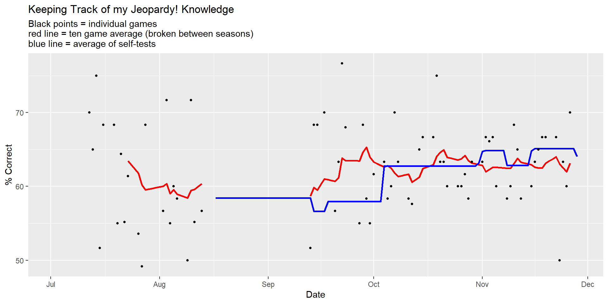
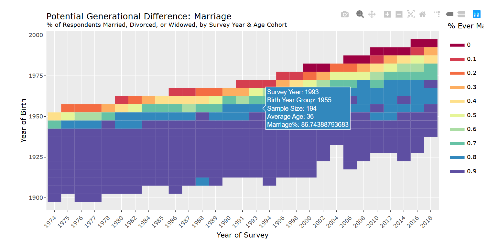

Data Projects
With one exception at the bottom of the page, these are all projects I have done in my free time because I was interested in the topic at hand, with the nice bonus of having something to show for it at the end that’s relevant to my professional skill set.
Trivia Projects
Studying for Jeopardy

I appeared on Jeopardy! in early 2022 after years of taking the qualification test, fulfilling a lifelong dream. In the months prior to my appearance, I used study methods developed by previous contestants to build a data project out of studying for the show. This included identifying the patterns seen on Jeopardy! game boards to determine the most important subjects for me to study, as well as using text analysis methods to quickly identify the most important facts to know about a given topic.
An article I wrote about the project, including methods and outcomes, is available here.
A presentation I gave at my office’s internal “Data Day” is also available for viewing here. I am aware that I should have used the provided microphone.
My git repo for this project is available here.
While I did not win on the episode of Jeopardy! discussed in the project, I did nonetheless get to return two years later to compete on Pop Culture Jeopardy! - which is currently available for streaming on Prime Video - and that went better for me.
LearnedLeague Season Simulator
LearnedLeague is an online trivia competition that dorks like me do for daily hits of validation. After previously writing a less complicated script to predict fantasy sports match-ups (discussed below), I expanded that code to create a Monte Carlo simulation of LearnedLeague seasons.
To view the git repo for this project, click here.
Professional Wrestling Projects
I am probably one of very few practitioners in the field of professional wrestling data analysis. That may be because that is a field with absolutely no potential value to anyone above it being kind of interesting to a small number of people. But that also means I might be the best at it. Think about that.
AEW Wrestler TrueSkill Dashboard Project
During the first few years of its existence, professional wrestling promotion All Elite Wrestling (AEW) published a ranking system within the fiction of professional wrestling to select top contenders for its various titles. As a personal challenge, I devoted several weeks in 2021 to creating an objective alternative to this ranking. This ultimately produced a ranking based in the TrueSkill package and a Tableau dashboard that allowed users to see the rankings on any given day since the company’s start in 2019.
The final dashboard product is available on Tableau Public here. It is no longer being updated as of January 2024.
A somewhat longer narrative write-up of this project is available here.
After I realized the ratings provided by the model had some amount of predictive ability, I wrote about that in the context of a particularly lopsided match in a Reddit post available here. The post was later nominated for best submission of the year by the community, receiving 8% of the vote and finishing in sixth.
The full git repo is available here.
NXT TakeOver Wrestler Network
As practice in the field of network analysis, I pulled the complete set of matches that happened at NXT TakeOver events and created a network of all wrestlers who have either competed against one another or teamed together, as well as running some basic centrality measures on that network. The git repo for that project is available here.
Fantasy Sports Projects
Yes! I am a boy.
Calcutta Auction Flask Application
After running a Calcutta auction via a hastily managed Google form during the 2022 World Cup, I had a “there’s got to be a better way!” moment and spent the next few months on and off looking into means by which I could automate the process. This led to me building a Flask application on the Python Anywhere platform, which I used to run a Calcutta auction for the 2023 March Madness tournament. The final product ran relatively slowly, but as a first effort I am proud of it. I lost money on this endeavor, which is probably for the best.
Fantasy League Monte Carlo Simulation
This is the original attempt at writing a script that simulates a series of head-to-head matchups, factoring in previous records and tiebreakers to predict a likelihood that any given team finishes in any given place in the standings table. I’ve iterated over it plenty of times as I’ve gotten better at Python and as Yahoo! continuously changes its interface, but the git repo for a reasonably recent version is available here.
Wedding Presents
Yes! Even wedding presents.
One year into my graduate studies in data science, I was eager to show off my new skills. Conveniently, I was invited to two weddings that summer and decided to make that their problems. Because I had robust Facebook Messenger chat histories with parts of both of the two weddings, I decided it’d be neat to pull down those chat logs and do something with them.
At one wedding, I was the man of honor (although I used “maid of honor” plenty, because that was a fun thing to get to call myself) and as part of that role gave a speech during the reception. In a portion of the speech, I surprised the bride with a series of metrics regarding how many times we had mentioned our respective dogs, a playlist of every YouTube video we had sent each other in the past ten years, and the first times she had mentioned her now husband in our chat, among other milestones. It is worth mentioning that this was not the entire speech, and also that despite the relative simplicity of “download and analyze a json” this is probably the most satisfied I have been with any project I have ever done.
At the other wedding, I was involved in a robust group chat with one of parties getting married; including with an actual gift was a ten-page long “card” detailing various group chat inside jokes and a term-frequency analysis of words that each member used the most since we had started talking.
As you can imagine, both of these end products are personal and won’t be shared. The git repo, of course, is available here.
Academic Projects

For a Data Visualization course I took in early 2020 as part of my Master’s coursework, under the instruction of Taylor Corbett, I created a short discussion of the General Social Survey featuring several interactive visualizations based heavily in plotly. Throughout my time at Georgetown I had been assisting Professor Jonathan Ladd with research on GSS data as it relates to public confidence, so I came in with significant familiarity with the data and as a result I’m very proud of what I put together.
The project itself is available for viewing here as a Github Page, and the code repo is available here.